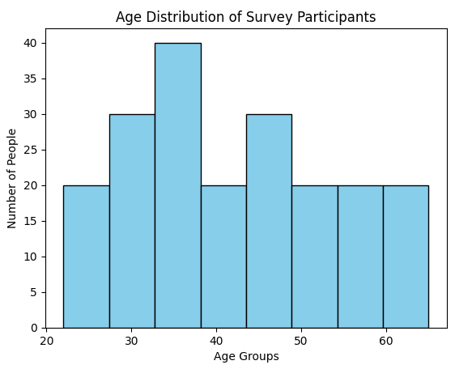
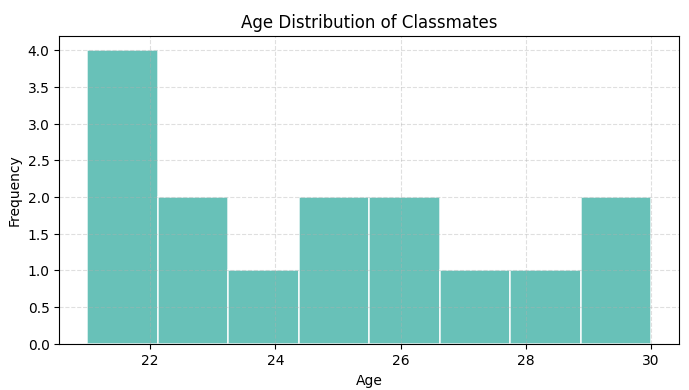

Learn Histograms in Python with Matplotlib – Step-by-Step with Code
A histogram is like a bar chart’s nerdy cousin — it doesn’t just compare things, it shows how your numbers are spread out. Instead of labels like "Apples" or "Oranges," you get ranges like 0–10, 10–20, and so on. It’s perfect when you want to see patterns in things like test scores, survey results, or even the ages of your favorite superheroes.
When should you use a histogram?
Use a histogram when you want to understand how your data is spread out — like figuring out what range most test scores fall into, or how often certain temperatures occur. It’s your go-to graph for spotting trends, clusters, or outliers in numeric data. If your data is continuous (like age, marks, height, time), a histogram is way more helpful than a pie chart or line graph.
Real-Life Examples of Histograms
- Student scores: Want to know how many students scored between 60–70 or 90–100? A histogram makes it crystal clear.
- Fitness tracking: Track how many days you ran for 10–20 mins vs 30–40 mins in a month.
- Weather data: See how often the temperature stayed between 20–30°C this summer.
- App usage: Curious how much time people spend on your app each day? A histogram shows the most common time ranges.
- Salary analysis: Understand how many employees earn within specific salary brackets — super useful in HR reports!
Step-by-Step Code Example
Here’s a simple example of how to create a histogram graph in Matplotlib:
import matplotlib.pyplot as plt
# Sample data: Ages of 200 people
ages = [22, 25, 29, 30, 32, 33, 35, 36, 38, 40,
42, 44, 45, 48, 50, 52, 55, 58, 60, 65] * 10
# Create the histogram
plt.hist(ages, bins=8, color='skyblue', edgecolor='black')
# Add titles and labels
plt.title("Age Distribution of Survey Participants")
plt.xlabel("Age Groups")
plt.ylabel("Number of People")
# Show the plot
plt.show()
Understanding the Code Step-by-Step
Let’s break down what’s happening in our histogram code, one line at a time — no boring jargon, just clear logic!
🔹import matplotlib.pyplot as pltWe’re grabbing Matplotlib’s plotting tools. Think of this like opening your paintbox before making a graph.
🔹ages = [22, 25, 29, ..., 65] * 10Our sample data: a list of ages repeated 10 times. It mimics a group of 200 people for better visualization.
🔹plt.hist(ages, bins=8, color='skyblue', edgecolor='black')
This is where the histogram is made:
• ages → the data we’re visualizing
• bins=8 → groups data into 8 age ranges
• color and edgecolor make it neat and readable
🔹plt.title("Age Distribution")
plt.xlabel("Age Groups")
plt.ylabel("Number of People")
We’re adding context: a title and axis labels so the chart makes perfect sense at a glance.
🔹plt.show()This line says: “All set — now show me the chart!”
Output of the above code :

Customize Your Histogram
Histograms don’t have to be boring! You can tweak colors, borders, transparency, and even the style of bars to make your data look clear and beautiful. Here’s how you can style it up:
import matplotlib.pyplot as plt
ages = [21, 23, 25, 22, 26, 29, 21, 25, 27, 30, 24, 23, 22, 28, 26]
plt.hist(
ages,
bins=8, # Number of bars
color='#4db6ac', # Soft teal fill color
edgecolor='white', # White borders between bars
linewidth=1.2, # Border thickness
alpha=0.85, # Slight transparency
histtype='bar' # Try 'step' or 'barstacked' too!
)
plt.title("Age Distribution of Classmates")
plt.xlabel("Age")
plt.ylabel("Frequency")
plt.grid(True, linestyle='--', alpha=0.4)
plt.show()
What’s Happening Here?
color: changes the fill color of each bar.edgecolor&linewidth: adds clean white borders between bars.alpha: controls transparency, useful when overlaying data.histtype: try values like'step'or'barstacked'for fun experiments!
Go ahead and play with these — tweak the colors, bin count, and styles to make your graph match your vibe.
Output of the above code :

Mini Project: Visualize Exam Score Distribution
Let’s say you’ve got the exam scores of 50 students. Build a histogram to visualize how those scores are spread out — who’s topping, who’s in the middle, and how many are lagging behind.
What You’ll Do:
- Take a list of 50 student scores (random or user input).
- Create a histogram with 5 or 10 bins to see score distribution.
- Customize it with colors, gridlines, titles, and more.
- Make it readable and beautiful for a quick classroom insights dashboard.
Bonus: Try grouping scores like 0–20, 21–40, etc., and label them smartly!
Perfect for teachers, students analyzing trends, or just for Python practice.
More educational content :